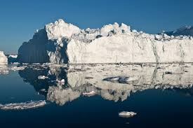

How Does It Affect Us ?
Our lives are connected to the climate. Human societies have adapted to the relatively stable climate we have enjoyed since the last ice age which ended several thousand years ago. A warming climate will bring changes that can affect our water supplies, agriculture, power and transportation systems, the natural environment, and even our own health and safety.Some changes to the climate are unavoidable. Carbon dioxide can stay in the atmosphere for nearly a century, so Earth will continue to warm in the coming decades. The warmer it gets, the greater the risk for more severe changes to the climate and Earth's system. Although it's difficult to predict the exact impacts of climate change, what's clear is that the climate we are accustomed to is no longer a reliable guide for what to expect in the future.We can reduce the risks we will face from climate change. By making choices that reduce greenhouse gas pollution, and preparing for the changes that are already underway, we can reduce risks from climate change. Our decisions today will shape the world our children and grandchildren will live in.
Melting ice and rising seas
The warming of the world's oceans is expanding their volume, while polar ice sheets have started to melt and glaciers around the world are shrinking. The combination of these changes is increasing sea level. Coastal systems and low lying areas will increasingly experience adverse impacts such as submergence, coastal flooding and coastal erosion due to predicted sea-level rise throughout the 21st century and beyond.
Regional impacts of global change forecast by the IPCC:
1. North America: Decreasing snowpack in the western mountains; 5-20 percent increase in yields of rain-fed agriculture in some regions; increased frequency, intensity and duration of heat waves in cities that currently experience them.
2. Latin America: Gradual replacement of tropical forest by savannah in eastern Amazonia; risk of significant biodiversity loss through species extinction in many tropical areas; significant changes in water availability for human consumption, agriculture and energy generation.
3. Europe: Increased risk of inland flash floods; more frequent coastal flooding and increased erosion from storms and sea level rise; glacial retreat in mountainous areas; reduced snow cover and winter tourism; extensive species losses; reductions of crop productivity in southern Europe.
4. Africa: By 2020, between 75 and 250 million people are projected to be exposed to increased water stress; yields from rain-fed agriculture could be reduced by up to 50 percent in some regions by 2020; agricultural production, including access to food, may be severely compromised.
5. Asia: Freshwater availability projected to decrease in Central, South, East and Southeast Asia by the 2050s; coastal areas will be at risk due to increased flooding; death rate from disease associated with floods and droughts expected to rise in some regions.
